Gifs on this page have been paused by default! You can toggle them using the buttons below.
Here are some link buttons if you so desire to link my site! Please remember to host them on your own server~ :3
 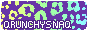
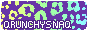
Tumblr | Artfol | Toyhou.se | Furaffinity | Art Fight | Bluesky | Sheezy.art
 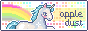 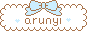
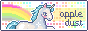 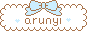 

 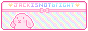 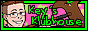
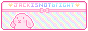 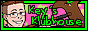 


 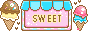
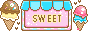  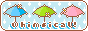 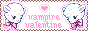
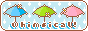 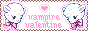


Kiwibon ✿ al a. lampone
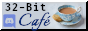 

SweetCharm Oekaki
SAKANA - My favorite webcomic! It's a romcom about two brothers who work at the Tsukiji Fish Market in Japan and all the hijinks they, their roommate, and their coworkers get up to.
Starhammer - My good friend J.N. Monk's webcomic. It centers a teen girl who receives an alien weapon that gives her constellation based super powers, and the wild turn her life takes as a result.
W3Schools - Programming tutorials and reference material. Good for learning web coding. My main reference for building this site.
Flight Rising - Pet site where you raise and breed dragons. I play this from time to time.
Chao Island - A major resource for chao raising in Sonic Adventure 2! This site got me started on my journey to raising chao and modding my chao garden experience.
Sonic the Hedgehog Comics - A site full of Sonic comic book covers! Maybe there are other things too, I haven't fully explored the site yet. Either way, awesome stuff!
Starhammer - My good friend J.N. Monk's webcomic. It centers a teen girl who receives an alien weapon that gives her constellation based super powers, and the wild turn her life takes as a result.
W3Schools - Programming tutorials and reference material. Good for learning web coding. My main reference for building this site.
Flight Rising - Pet site where you raise and breed dragons. I play this from time to time.
Chao Island - A major resource for chao raising in Sonic Adventure 2! This site got me started on my journey to raising chao and modding my chao garden experience.
Sonic the Hedgehog Comics - A site full of Sonic comic book covers! Maybe there are other things too, I haven't fully explored the site yet. Either way, awesome stuff!